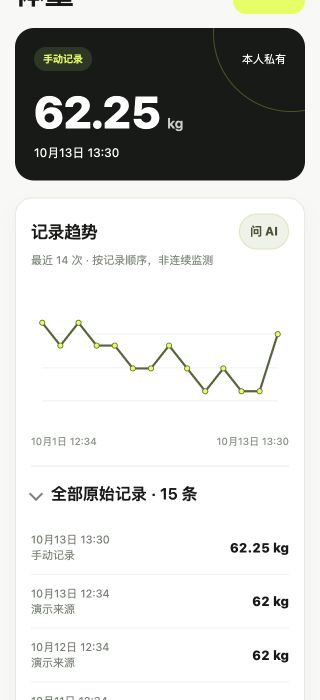
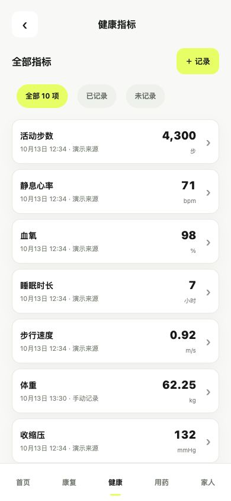
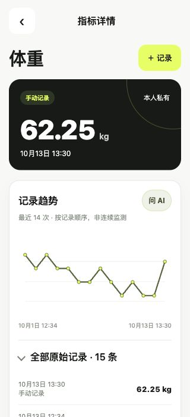
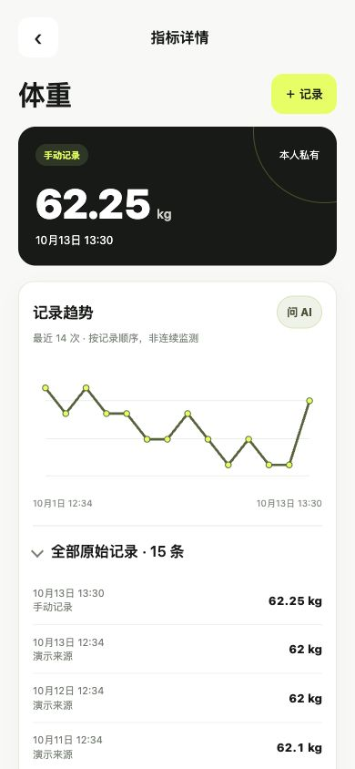
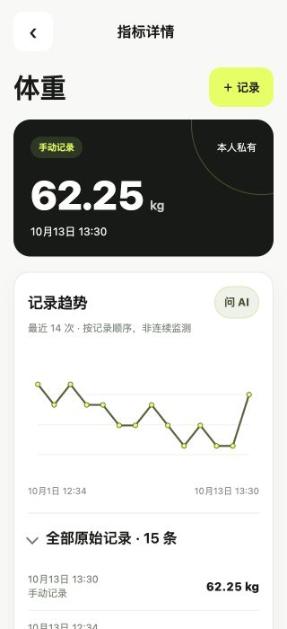
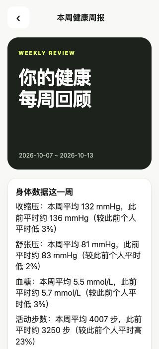
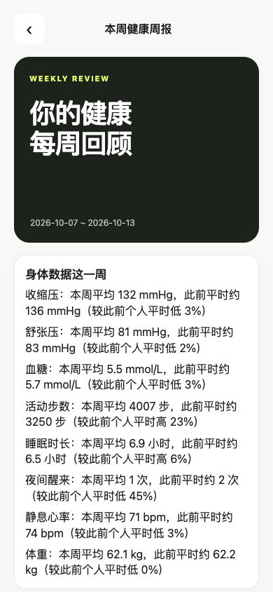

实际运行截图索引 · 43张
除两张注明的旧审查基线截图，均为本轮真实浏览器运行；全部为指定完整视口，不使用模拟DOM生成。
ai-disconnected-320.jpgai-return-reading-state-320.jpg
all-metrics-320.jpgall-metrics-390.jpg
all-metrics-empty-filter-390.jpgarchive-detail-320.jpgarchive-trash-320.jpgarchive-upload-320.jpgarchives-320.jpgarchives-390.jpgbefore-health-320.jpg before-health-390.jpg
before-health-390.jpg context-ai-320.jpgcontext-ai-390.jpgempty-trend-320.jpghealth-disconnected-320.jpghealth-disconnected-390.jpghealth-home-320.jpg
context-ai-320.jpgcontext-ai-390.jpgempty-trend-320.jpghealth-disconnected-320.jpghealth-disconnected-390.jpghealth-home-320.jpg health-home-390.jpg
health-home-390.jpg health-missing-320.jpghealth-missing-390.jpglocal-search-320.jpgmetric-detail-320.jpg
health-missing-320.jpghealth-missing-390.jpglocal-search-320.jpgmetric-detail-320.jpg
metric-detail-390.jpg
metric-raw-history-320.jpg
metric-saved-zero-320.jpgprofile-320.jpgprofile-390.jpgprofile-edit-320.jpgrecord-required-320.jpgrecord-save-failed-320.jpgrecord-zero-draft-320.jpgregression-home-320.jpgregression-home-390.jpgregression-rehab-320.jpgregression-rehab-390.jpgrehab-summary-320.jpgrehab-summary-390.jpgsingle-record-trend-320.jpgunpaired-320.jpgunpaired-390.jpgweekly-report-320.jpg
weekly-report-390.jpg